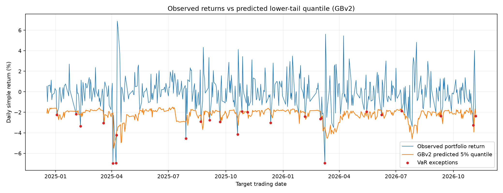
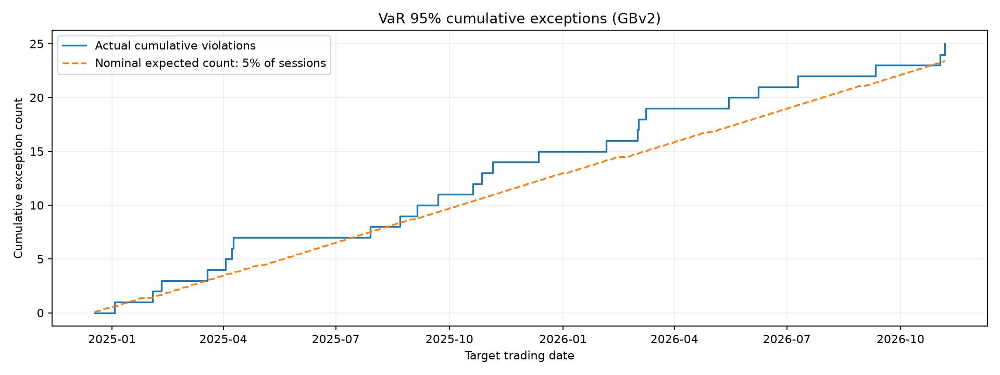
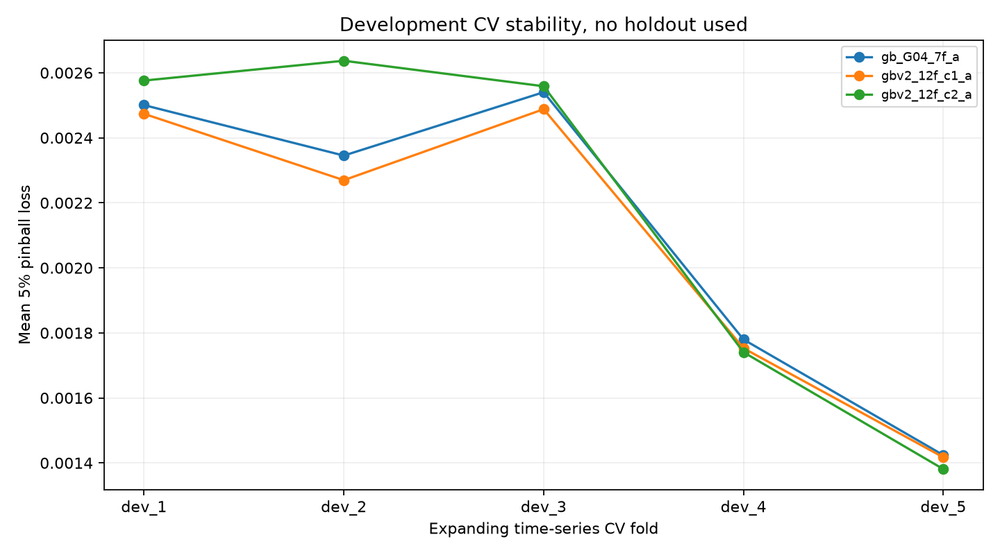
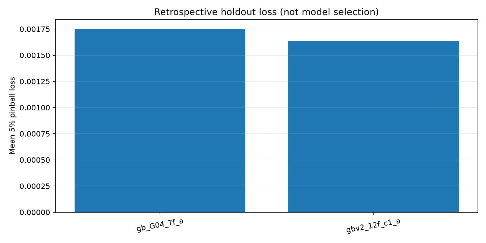
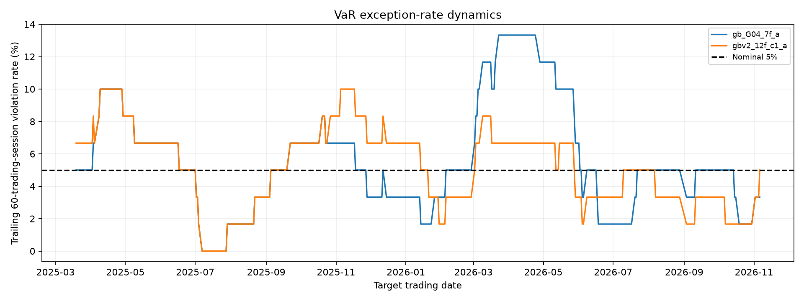

Portfolio VaR — Phase 2
A: kiểm tra độc lập · Dữ liệu KBS đến 06/11/2026 · Báo cáo kết quả lịch sử, không phải dự báo thời gian thực
GBv2 C1 được chọn theo CV chỉ trên development trước 18/12/2024. Holdout từ 18/12/2024 đến 06/11/2026 được dùng để đánh giá hồi cứu, nhưng đã trùng giai đoạn đánh giá từng công bố ở Phase 1, không phải tập test hoàn toàn độc lập. G04 ở đây fit cố định theo fold/holdout; không đồng nhất với protocol Phase 1 refit mỗi ngày. Các dự báo B có giai đoạn và folds khác, không được so sánh hiệu năng trực tiếp với A.
1. Lựa chọn bằng development CV
| Mô hình | Mean pinball CV | Số features |
|---|---|---|
| gbv2_12f_c1_a | 0.002080 | 12 |
| gb_G04_7f_a | 0.002118 | 7 |
| gbv2_12f_c2_a | 0.002179 | 12 |
2. Holdout cùng ngày (chỉ A 7F vs A 12F)
| Mô hình | Số phiên | Vi phạm | Tỷ lệ | Pinball | Mean VaR |
|---|---|---|---|---|---|
| gb_G04_7f_a | 468 | 25 | 5.34% | 0.001752 | 0.023253 |
| gbv2_12f_c1_a | 468 | 25 | 5.34% | 0.001637 | 0.022302 |
3. Kiểm định VaR
| Mô hình | Phiên | Vi phạm | Tỷ lệ | Kupiec p | Christoffersen p | CC p |
|---|---|---|---|---|---|---|
| gb_G04_7f_a | 468 | 25 | 5.34% | 0.737029 | 0.183947 | 0.390981 |
| gbv2_12f_c1_a | 468 | 25 | 5.34% | 0.737029 | 0.534649 | 0.779462 |
p-value cao hơn 0,05 nghĩa là chưa bác bỏ giả thuyết tương ứng ở mức 5%, không chứng minh mô hình hoàn hảo.
4. Kiểm chứng baseline của B (không so sánh holdout A/B)
| Baseline B | Số dự báo | Vi phạm | Tỷ lệ | Pinball |
|---|---|---|---|---|
| Historical Simulation w250 | 1455 | 76 | 5.22% | 0.002028 |
| EWMA(0.94) | 1455 | 75 | 5.15% | 0.001939 |
| GB G04 7 features | 1370 | 68 | 4.96% | 0.001923 |
A tái lập HS/EWMA/GB của B từ dữ liệu KBS tương ứng; không có file bytes snapshot B ban đầu để xác nhận SHA256 gốc. B chưa tái lập GBv2 C1 trên cùng protocol của A.
5. Biểu đồ





Hình và bảng lấy từ dữ liệu A3/A4 đã kiểm SHA256. Xem integration_manifest.json để truy xuất nguồn và hash.